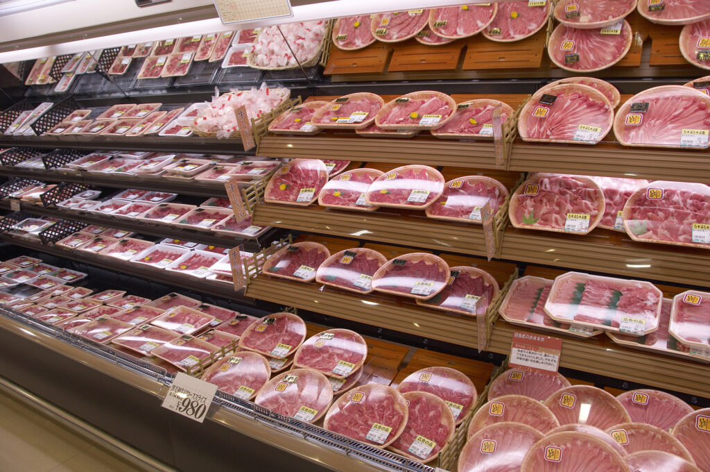

#036_Lステップで客単価を上げる

こんにちは！matsumotoです。やっとコロナ禍の暑い夏が終わり、朝夕涼しくなってきましたね。個人的には、外出時のマスク着用が蒸し暑くて苦痛だったので、秋の到来は大歓迎です！
秋といえば「食欲」！という訳で、少々強引ではありますが、毎日のご家庭の食卓を彩るスーパーを例に「どうすればLINE公式アカウント（Lステップ）で売り上げを上げることができるのか？」というテーマを深堀りしていきたいと思います！スーパーに限らず、個人商店や実店舗をお持ちの方はぜひ参考にしていただければと思います。
（１）売り上げを上げるには？
LINE公式アカウントを使ってお店の売上を上げる方法は、2通りあります。第一は、LINE公式アカウントで集客して、お客様を増やす。もちろん、集客したいからLINE公式アカウントを活用するわけですが、人口の限られた地域などではお客様の数も限られており、簡単なことではありません。
次に、客単価を上げる、という方法。来店されるお客様が一人当たり幾ら買ってくれるのか、というのが客単価です。すでにお店や事業をやっておられる方なら、ご自分の顧客の客単価は大体把握されているでしょう。その客単価が上がれば、ストレートに売り上げアップにつながります！
とは言え、いきなり値上げをするともうお客様が買いに来なくなるかもしれません。では、一体どうすれば良いのでしょうか？
（２）クロスセルとアップセル
お客様に無理して高い買い物をしてもらうのではなく、魅力やメリットを感じてもらうことで客単価を上げる。そのためには、メインになる商品にプラスして相性の良い商品を合わせて購入してもらう方法(①クロスセル)と、さらなる上位商品を購入してもらう方法(②アップセル)があります。

身近なところで説明しますね！
例えば、スーパーマーケットの精肉コーナーを覗いてみると、牛肉売り場のそばに焼肉のタレが陳列されています。これは、メインの商品となる牛肉と相性のいい焼肉のタレを置くことで、客単価のアップを狙っているのです！
お客様も、わざわざタレ売り場まで移動する必要がなく『あれ？家に買い置きあったかな？ 念のために買っておこう』という消費行動に繋がります。これが①クロスセルにあたります。
では、このような手法をLステップでどのように実現していくことができるのでしょうか。言うまでもありませんが、安直に売りたい商品について配信したからといって、即買ってもらえるという可能性は低いです。
（３）Lステップでクロスセルを実践！
たとえば、Amazonで買いたい商品を検索すると、商品ページの下に「この商品を買われた方はこんな商品も買っています」と表示されますよね。あれもクロスセルによる客単価アップを狙っている分かりやすい例です。
最近、いわゆる「WEBマーケティング」を行う会社が増えました。多種多様な動画コンテンツや、AIなど最新のテクノロジーを駆使したマーケティングツールを販売しているような会社です。このような会社に依頼し、自社のデータから「クロス分析」機能を使って相性の良い組み合わせを見つけ出します。「牛肉」と「焼肉のタレ」のように、「商品Aを購入した人は商品Bを高確率で購入している」、というような消費行動に基づくパターンを割り出すのです。
そこで、そのパターンに応じて、商品Aを購入してくれた顧客に対してサンキューメッセージを送り「商品B」を知ってもらうのです。もしくは「こちらの商品はもうお買い求めになりましたか？」と定期的に配信することで訴求していきます。こういった配信は、Lステップで自動配信設定できるので、労力をかけなくとも客単価のアップが狙えます。
何度も配信することでブロックされるかも、、、と不安な場合は、以前のブログ#033でも書いた通り、リッチメニューに「おすすめ商品！」として表示するのも効果的です！
（４）まとめ
今回の記事は、クロスセルの原則について解説しましたが、もちろん個々の企業に合った戦略や工夫が必須です。時と場合によっては、その為に新しい商品を開発する必要も出てくるかもしれません。しかし、これを機会に、自社のサービス全般を見直してみるのも良いことだと思いますよ！
まずはLINE公式アカウントを開設しましょう！
●LINE公式アカウントの開設方法はこちら
●LINE公式アカウントをオススメする理由はこち
●LINE公式アカウントでできることはこちら
●Lステップでできることはこちら